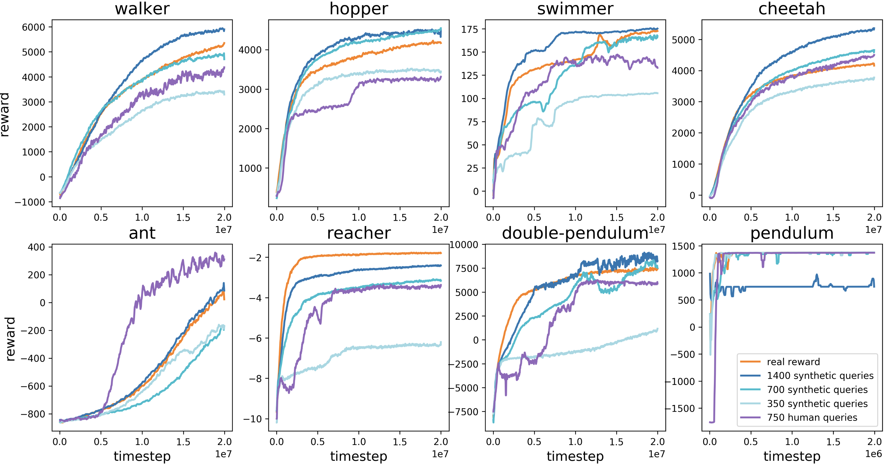
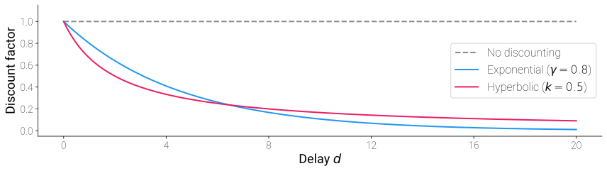

Learning reward functions from imperfect human feedback for robotic decision making
Committee: Prof. Matthew Gombolay (Chair), Prof. Maegan Tucker (Advisor), Prof. Sonia Chernova
Introduction: why learn rewards?
Reinforcement learning (RL) has yielded high performing robotic control.
Yet, process hinges on having a well-defined reward function.
Definition: Reward Function
The reward function \(R : \mathcal{S} \times \mathcal{A} \rightarrow \mathbb{R}\) maps (state, action) pairs to a scalar signal that is maximized when the agent achieves its goal. The reward function could also encode how that behavior is achieved.
Not all objectives are easily describable via hand-crafted rewards.
The canonical paradigms to learn rewards
Definition: Inverse Reinforcement Learning (IRL)
IRL infers the underlying reward \(R\) that explains observed expert behavior, typically by assuming the expert acts (approximately) optimally to \(R\).
Abbeel et al. (2004, Apprenticeship learning via inverse reinforcement learning).
Definition: Preference-Based Learning (PBL)
PBL infers a reward \(R\) that is consistent with human preferences over pairs or sets of trajectories, actions, or outcomes, rather than from demonstrations or explicit feedback.
Christiano et al. (2017, Deep reinforcement learning from human preferences).
However, human feedback is imperfect.
- Inconsistency, suboptimality, and heterogeneity are systematic noise.
- Humans aren’t computers: they have finite energy and avoid pain.
Even pairwise comparisons, can vary over trials and individuals.
An Outline for Leveraging…
…Imperfect Human Feedback…
Highlight and validate the characteristics of human feedback in real human-robot systems.
Evans et al. (2016, Learning the preferences of ignorant, inconsistent agents).
Armstrong et al. (2018, Occam’s razor is insufficient to infer the preferences of irrational agents).
…to Learn Rewards and Construct Policies.
Examine how human data is tractably used to synthesize rewards and robotic decision-making with ill-defined objectives
Christiano et al. (2017, Deep reinforcement learning from human preferences).
MacGlashan et al. (2017, Interactive learning from policy-dependent human feedback).
Hadfield-Menell et al. (2017, Inverse reward design).
We’ll end by examining an open problem in the field and proposing a new methodology to address it.
Imperfect Human Feedback.
Types of Imperfect Feedback
Human feedback deviates from ideal behavior in three systematic ways:
Inconsistency: a user may provide different feedback for the same query at different times.
Suboptimality: people don’t always provide optimal demonstrations to an underlying reward.
Heterogeneity: humans can exhibit different biases, styles, and prioritizations.
Each of these imperfections manifest in systematic, non-random ways.
Reward learning methods must account for these imperfections to accurately recover the true reward \(R\).
Inconsistency
Some sources of inconsistency in human feedback include
- Random, uniform noise
- Time-inconsistency: users might suddenly change their preferences in non-random ways
- False beliefs
Suboptimality
Suboptimality can be considered via policy decomposition
Go through what \(R\) and \(p\) are according to the slide you already made.
Heterogeneity
Varied planners can result in different feedback w.r.t the same reward.
Find some source that humans balance between multiple objectives.
Learning Rewards for Robotic-Decision Making.
Collecting Imperfect Human Feedback
PBL (and IRL) can be made active from a well-tuned acquisition function.
Definition: Acquisition Function
An acquisition function \(a\) is a strategy for selecting what queries to provide to the human to collect feedback. It is the central mechanism of active learning, enabling the learner to optimize data collection rather than passively collect feedback.
Strategic sampling can help minimize other sources of noise and imperfections in human feedback.
- User fatigue: feedback quality can diminish after long trials.
- Regret minimization: constant, bad behaviors can be dangerous, or uncomfortable for physical human-robot systems.
Sample Efficiency: Information Gain
PBL (and IRL) can be made active from a well-tuned acquisition function.
Definition: Acquisition Function
An acquisition function \(a\) is a strategy for selecting what queries to provide to the human to collect feedback. It is the central mechanism of active learning, enabling the learner to optimize data collection rather than passively collect feedback.
Information Gain: select queries that maximize the expected reduction in uncertainty over the reward function
\[a^*(q) = \arg\max_q \; H[\theta] - \mathbb{E}_{y \mid q}\left[H[\theta \mid y]\right]\]
Sample Efficiency: Thompson Sampling
PBL (and IRL) can be made active from a well-tuned acquisition function.
Definition: Acquisition Function
An acquisition function \(a\) is a strategy for selecting what queries to provide to the human to collect feedback. It is the central mechanism of active learning, enabling the learner to optimize data collection rather than passively collect feedback.
Thompson Sampling: sample a reward function from the posterior and select the query that is optimal under that sample
\[\theta^* \sim p(\theta \mid \mathcal{D}), \qquad a^*(q) = \arg\max_q \; V_{\theta^*}(q)\]
Leveraging Preferences in Deep RL
How can we tractably learn a reward \(\hat{R_{\theta}}\) consistent with preferences over robot behaviors? \[\begin{align} \sum_{(s,~a)~\in~\tau_1} \hat{R}_{\theta}(s,a) > \sum_{(s,~a)~\in~\tau_2} \hat{R}_{\theta}(s,a) \implies \tau_1 \succ \tau_2 \end{align}\]
- Optimize \(\pi\) for \(\hat{R}\) using deep RL
- Rollout \(\pi\) to produce trajectory set \(\{\tau_1, \dots, \tau_i\}\).
- Select trajectory segments \((\sigma_1, \sigma_2)\) and query human for preference.
- Optimize \(\hat{R}\) to be consistent with those preferences.

Christiano et al. (2017, Deep reinforcement learning from human preferences).
Extracting a Reward from Preferences
Definition: Bradley-Terry Preference Model
\[\begin{align} P(\sigma^1 \succ \sigma^2 \mid \theta) = \frac{\exp \sum_{t} \hat{R}_{\theta}(s_t^1, a_t^1)}{\exp \sum_t \hat{R}_{\theta}(s_t^1, a_t^1) + \exp \sum_t \hat{R}_{\theta}(s_t^2, a_t^2)}, \qquad (s^i_t, a^i_t) \in \sigma_i \end{align}\]
- Learn an ensemble \(\hat{R}_{\theta_i}\).
- Query the human over \(\sigma^1\), \(\sigma^2\) that elicit the most disagreement over \(\hat{R}_{\theta_i}\).
- \(\mathcal{D} \leftarrow (\sigma^1, \sigma^2, \mu)\)
\(\mu\) is a distribution over \(\{1, 2\}\) representing user’s feedback.
\[\begin{align} \text{loss}(\theta) = -\sum_\mathcal{D}~\biggl[~&\mu(1) \log \hat{P}(\sigma^1 \succ \sigma^2 \mid \theta) \\+ &\mu(2) \log \hat{P}(\sigma^2 \succ \sigma^1 \mid \theta)\biggr] \\ \theta \leftarrow \nabla_\theta~\text{loss}(\theta) \end{align}\]
Christiano et al. (2017, Deep reinforcement learning from human preferences).
Results and Discussion

This approach works varyingly well. Non-stationarity somewhat clouds results.
Christiano et al. (2017, Deep reinforcement learning from human preferences).
Assumptions and Sources of Failure
- Assumes humans respond approximately optimally.
- Assumes annotators provide homogeneous preferences.
- Assumes preferences are made consistently over the whole learning process.
Your Feedback is Secretly an Advantage Function
Rather than learning a reward function, can we skip straight to robotic decision-making?
- Binary human feedback is policy-dependent
- Users judge current actions relative to other possible actions
This definition is synonymous with the advantage function
Definition: Advantage Function
The advantage function \(A\) roughly describes the relative utility of taking action \(a\) at state \(s\) in comparison to expected behavior.
\[A(s,a) = Q(s,a) - V(s)\]
MacGlashan et al. (2017, Interactive learning from policy-dependent human feedback).
Learning from Feedback without a Reward Function
With feedback akin to advantage, “COACH” can be updated via policy gradient, forgoing a critic entirely.
\[ g_\theta = \mathbb{E}_{\pi_\theta}\left[\nabla_\theta \log \pi_\theta(a \mid s) \, A^{\pi_\theta}(s, a)\right] \]
\[ g_\theta = \mathbb{E}_{\pi_\theta}\left[\nabla_\theta \log \pi_\theta(a \mid s) \, f_t\right] \]
COACH deals with time-sensitive feedback.
- Account for human reaction time using eligibility traces.
- Aggregate feedback to account for successive responses.
MacGlashan et al. (2017, Interactive learning from policy-dependent human feedback).
Results and Discussion of Assumptions
- Inconsistency can increase in this situation due to time-pressure, negatively influencing human decision making.
- The correspondance problem can result in suboptimality if robot features are not well constructed.
- Heterogeneous feedback can lead the policy to ‘average’ its behavior.
MacGlashan et al. (2017, Interactive learning from policy-dependent human feedback).
Revisiting Handcrafted Rewards
Inverse Reward Design (IRD) reconsiders the human-crafted reward.
- Reward hacking
- Reward suboptimality
IRD suggests that hand-crafted rewards should be interpreted in the context in which they were specified.

“Human-specified rewards should be treated as an observation.”
Hadfield-Menell et al. (2017, Inverse reward design).
Boltzmann Rationality Applied to Reward Design
Hand crafted rewards are likely to the extent that they lead to high true utility in the environment.
Definition: Approximately Optimal Designer
Allow \(w\) to scalarize features \(\phi(\tau)\) for reward \(R = w^T\phi(\tau)\), then \[\begin{align} P(\tilde{w} \mid w^*, M) \propto \exp\left(\alpha~\mathbb{E}[{w^*}^T\phi(\tau) \mid \tau \sim \pi(\cdot \mid \tilde{w}, M)]\right) \end{align}\]
We can then use Bayes rule to develop a posterior over reward functions, given hand-crafted \(\tilde{w}\) and confidence \(\alpha\).
Lastly, risk-averse planning can be used to select trajectories that would maximize return of the true reward in the worst case.
Hadfield-Menell et al. (2017, Inverse reward design).
Open Problems
How can we apply the aforementioned solutions to cases of continuous robotic control?
Can we reduce reliance on hand-crafted features?
Should people explore their options before deciding their preference?
How can we explicitly model bounded-rationality, or style, of a demonstrator?
Exploring Your Options
Algorithmic Approach
Baseline Case
Experimental Validation
Potential Limitations
References
Questions?
Preliminaries: Idealistic Behavior
How can we model idealistic behavior?
Agents optimize cummulative return, or value \(V\), by adhering to optimal behavior \(\pi^*\) \[\begin{align} V_{\pi^*}(s_0) = \sum_t R(s_t,a_t), \qquad s_{t+1} \sim T(s_t, a_t) ,~a_{t} \sim \pi^*(s_t) \end{align}\]
We can model this via Boltzmann Rationality.
Definition: Boltzmann Rationality
A perfectly rational agent can be modeled via the recursive relationship found in Boltzmann Rationality, \[\begin{align} P(a \mid s) \propto \exp(\alpha Q(s,a)), \qquad Q(s, a) = R(s, a) + \mathbb{E}[Q(s',a')] \end{align}\] where \(s' \sim T(\cdot \mid s,a),~a' \sim P(\cdot \mid s')\) and \(Q\) is the quality function.
Imperfect Human Feedback: Inconsistency
Can we model systematic deviations to optimal behavior?
Time inconsistency: apply hyperbolic discounting to model the prioritization of immediate rewards over long-term ones.

Naive: \(a' \sim P(\cdot \mid s, d)\)
Sophisticated: \(a' \sim P(\cdot \mid s, 0)\)
Evans et al. (2016, Learning the preferences of ignorant, inconsistent agents).
Imperfect Human Feedback: Inconsistency
Can we model systematic deviations to optimal behavior?
False beliefs: update state knowledge with a prior belief \(p(s)\) and likelihood function \(p( o \mid s)\): \[p(s \mid o) \propto p(s)p(o \mid s)\]
Then, we can redefine our agent’s behavior in terms of belief \(p(s)\).
\[\begin{aligned} &P(a' \mid {\color{red}p(s)}, o, d) \propto \exp \left(\alpha Q({\color{red}p(s)}, a' \mid o, d) \right), \\ &Q({\color{red}p(s)}, a \mid o, d) = \underset{{\color{red}s \sim p(s | o)}}{\mathbb{E}} \left[ \frac{1}{1 + kd}R(s,a) + \underset{s',~{\color{red}o'},~a'}{\mathbb{E}}[Q({\color{red}p(s | o)}, a' \mid o', d + 1)] \right]. \end{aligned}\]Evans et al. (2016, Learning the preferences of ignorant, inconsistent agents).
Imperfect Human Feedback: Inconsistency
The paper demonstrated that their enhanced model with time-inconsistency and false beliefs aligned with humans.
They asked humans \((n=50)\) to explain observed behaviors, and fit their own model to those behaviors.

Found a large similarities between model and human explanations.
Evans et al. (2016, Learning the preferences of ignorant, inconsistent agents)
Imperfect Human Feedback: Suboptimality and Heterogeneity
Humans deviate from optimal behavior \(\pi^*\) due to bounded-rationality and complex decision-making: Boltzmann rationality is not necessarily correct.
Definition: Policy Decomposition
Human policy \(\pi^{.}\) can be decomposed into a planner-reward pair \((p, R)\) via \(p(R) = \pi^.\). Planner \(p\) encodes the (ir)rationality, biases, and style of the human, while reward \(R\) describes the human’s goal.
Policy decomposition is an underdetermined problem–additional constraints are needed to find unique solutions.
- Heterogeneity and suboptimality can be modeled via a planner.
- Simpler is not always better–degenerate decompositions have lower complexity than “reasonable” ones.
Armstrong et al. (2018, Occam’s razor is insufficient to infer the preferences of irrational agents)